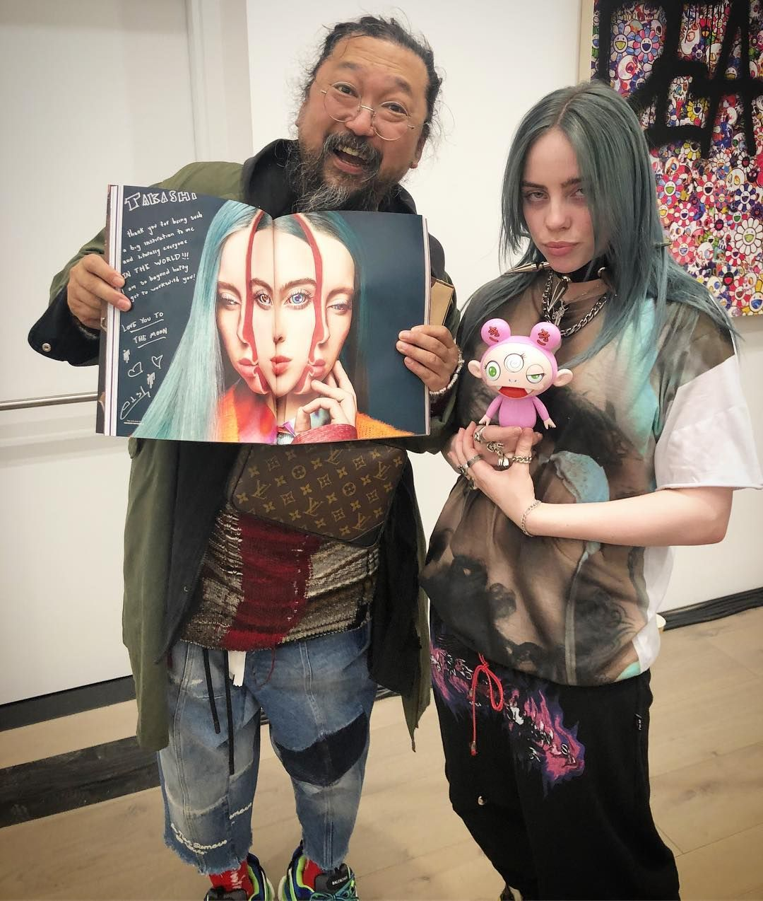

Takashi Murakami ha colaborado con una amplia gama de artistas, músicos, diseñadores y marcas de moda, aquí algunas de sus colaboraciones más destacadas:
Kanye West – Graduation (2007) → Diseñó la portada del álbum y el personaje del osito en la portada, además del video animado de Good Morning.
Billie Eilish (2019) → Colaboró en una línea de ropa y un cortometraje animado inspirado en su estilo visual.
Pharrell Williams → Ha trabajado en múltiples proyectos con el artista y productor, incluyendo el diseño de joyas.